토목기사 (2004-05-23 기출문제)
1과목: 응용역학
1. 그림과 같은 크레인(crane)에 2000kg의 하중을 작용시킬 경우, AB 및 로우프 AC 가 받는 힘은?
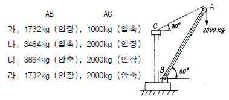
- 가
- 나
- 다
- 라
(정답률: 45%)

2. 반지름이 r인 중실축(中實軸)과, 바깥 반지름이 r 이고 안쪽 반지름이 0.6r 인 중공축(中空軸)이 동일 크기의 비틂 모멘트를 받고 있다면 중실축(中實軸):중공축(中空軸)의 최대 전단력비는?
- 1 : 1.28
- 1 : 1.24
- 1 : 1.20
- 1 : 1.15
(정답률: 74%)
3. 단면 10cm(b)× 15cm(h) 인 단주에서 편심 1.5cm 인 위치에 P=12,000kg 의 하중을 받을 때 최대응력은?
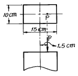
- 84 kg/cm2
- 106 kg/cm2
- 128 kg/cm2
- 152 kg/cm2
(정답률: 50%)
4. 그림과 같은 반경이 r 인 반원 아아치에서 D 점의 축방향력 ND의 크기는 얼마인가?
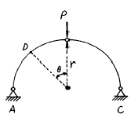
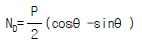
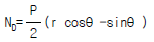
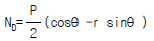
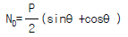
(정답률: 28%)
5. 휨모멘트를 받는 보의 탄성 에너지(strain energy)를 나타내는 식은?
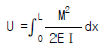
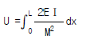
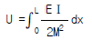
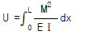
(정답률: 50%)
6. 어떤 금속의 탄성계수 E = 21× 1⑤ kg/cm2이고, 전단 탄성계수 G = 8× 1⑤ kg/cm2일때 이 금속의 포아송비는?
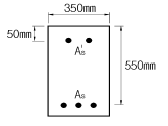
- 0.3075
- 0.3125
- 0.3275
- 0.3325
(정답률: 47%)
7. 그림과 같은 강봉이 2개의 다른 정사각형 단면적을 가지고 P하중을 받고 있을 때 AB가 1500kg/cm2의 수직응력(Nomal stress)을 가지면 BC에서의 수직응력은 얼마인가?
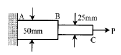
- 1,500kg/cm2
- 3,000kg/cm2
- 4,500kg/cm2
- 6,000kg/cm2
(정답률: 54%)
8. 축하중 P를 받는 봉(Bar)이 있다. 봉속에 저장되는 변형에너지에 대한 설명 중 틀린 것은?
- 전길이의 단면이 균일(uniform section)하면 변형에너지에 유리하다.
- 봉의 길이가 같은 경우 단면적이 증가 할수록 변형에너지는 감소한다.
- 동일한 최대응력을 갖는 봉일지라도 홈을 가지면 변형에너지는 감소한다.
- 변형에너지 흡수능력이 적을수록 동하중 작용 시 유리하다.
(정답률: 15%)
9. 주어진 단순보에서 최대 휨모멘트는 얼마인가?
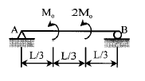
- MO
- 1.5MO
- 2MO
- 3MO
(정답률: 39%)
10. 다음과 같이 D점이 힌지인 게르버보에서 A점의 반력은 얼마인가?
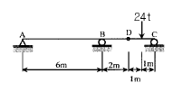
- 3 t(↓ )
- 4 t(↓ )
- 5 t(↑ )
- 6 t(↑ )
(정답률: 50%)
11. 휨강성이 EＩ인 프레임의 C점의 수직처짐 δc를 구하면?
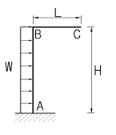
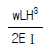
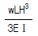
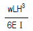
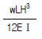
(정답률: 56%)
12. 다음 보에서 휨강성은 EI 로 동일할 때 휨에 의한 처짐량 δ cb 와 δ bc의 관계는?
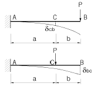
- δ cb>δ bc
- δ cb<δ bc
- 상관관계 없음
- δ cb=δ bc
(정답률: 32%)
13. 다음과 같은 단면적이 A인 임의의 부재단면이 있다. 도심 축으로부터 y1 떨어진 축을 기준으로한 단면2차모멘트의 크기가 Ｉx1일때, 2y1 떨어진 축을 기준으로한 단면2차모 멘트의 크기는?
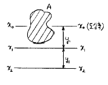
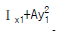
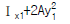
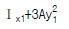
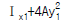
(정답률: 70%)
14. 다음 구조물에서 최대처짐이 일어나는 위치까지의 거리 xm를 구하면?
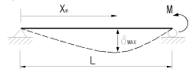
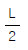
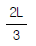
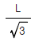
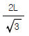
(정답률: 58%)
15. 동일한 재료 및 단면을 사용한 다음 기둥 중 좌굴하중이 가장 큰 기둥은?
- 양단 고정의 길이가 2 L인 기둥
- 양단 힌지의 길이가 L인 기둥
- 일단 자유 타단 고정의 길이가 0.5 L인 기둥
- 일단 힌지 타단 고정의 길이가 1.2 L인 기둥
(정답률: 67%)
16. 단순보에 그림과 같이 하중이 작용시 C점에서의 모멘트값은?
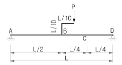
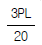
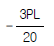
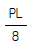
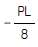
(정답률: 29%)
17. 정정구조의 라멘에 분포하중 w가 작용시 최대 모멘트를 구하면?
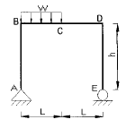
- 0.186wL2
- 0.219wL2
- 0.250wL2
- 0.281wL2
(정답률: 48%)
18. 다음의 그림에 있는 연속보의 B점에서의 반력을 구하면? (E=2.1 × 106kg/cm2 , Ｉ=1.6× 104cm4)
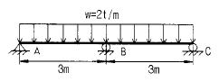
- 6.3 t
- 7.5 t
- 9.7 t
- 10.1 t
(정답률: 39%)
19. 그림과 같은 단순보의 최대전단응력 τ max를 구하면? (단, 보의 단면은 지름이 D인 원이다.)
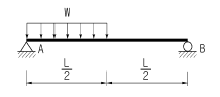
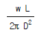
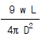
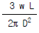
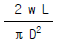
(정답률: 48%)
20. 그림과 같은 트러스의 상현재U의 부재력은?
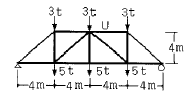
- 16t(인장)
- -16t(압축)
- 12t(인장)
- -12t(압축)
(정답률: 39%)
2과목: 측량학
21. 측점간의 시통이 불필요하고 24시간 상시 높은 정밀도로 3차원 위치측정이 가능하며, 실시간 측정이 가능하여 항법용으로도 활용되는 측량방법은?
- NNSS 측량
- GPS 측량
- VLBI 측량
- 토탈스테이션 측량
(정답률: 39%)
22. 100m2의 정사각형의 토지의 면적을 0.1까까지 정확하게 구하기 위한 필요하고도 충분한 한변의 측정거리오차는?
- 3mm
- 4mm
- 5mm
- 6mm
(정답률: 27%)
23. 어떤 각을 12회 관측한 결과 ± 0.5″ 의 평균제곱근오차를 얻었다. 같은 정확도로 해서 ± 0.3″ 의 평균제곱근오차를 얻으려면 몇회 관측하는 것이 좋은가?
- 5회
- 8회
- 18회
- 34회
(정답률: 18%)
24. 그림에서와 같이 B점의 표고를 구하고자 간접수준측량을 하였다. 양차를 고려할 때 B점의 표고는? (단, 굴절계수 K=0.14, 지구곡률반경 R=6400km)
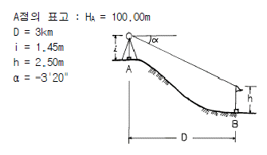
- 102.46m
- 98.74m
- 96.65m
- 96.04m
(정답률: 0%)
25. 삼각측량에서 시간과 경비가 많이 소요되나 가장 정밀한 측량성과를 얻을 수 있는 삼각망은?
- 유심망
- 단삼각형
- 단열삼각망
- 사변형망
(정답률: 45%)
26. 그림에서 AD, BD 간에 단곡선을 설치할 때 潮ADB의 2등분 선상의 C 점을 곡선의 중점으로 선택하였을 때 이 곡선의 접선길이를 구한 값은? (단, DC = 10.0m, I = 80° 20' 이다.)
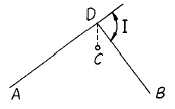
- 34.⑤m
- 32.41m
- 27.35m
- 15.31m
(정답률: 19%)
27. 확폭량의 계산에서 차선 중심선의 곡선 반경(R)을 두배로 하면 확폭량은 몇 배가 되는가?
- 1/2배
- 1/4배
- 2배
- 4배
(정답률: 43%)
28. 지형도에서 A지점의 표고가 60m, B점의 표고가 160m이고, 두 점간의 수평거리가 100m라고 할 때 A점과 B점 사이에 표고 100m인 등고선을 삽입하려고 할 때 A점으로부터의 수평거리는?
- 20m
- 40m
- 60m
- 80m
(정답률: 20%)
29. 다음 중 곡률이 급변하는 곡선부에서의 탈선 및 심한 흔들림 등의 불안정한 주행을 막기 위해 고려하여야하는 사항과 가장 거리가 먼 것은?
- 완화곡선
- 편경사
- 확폭
- 종단곡선
(정답률: 31%)
30. 하천의 평균유속 측정법 중 3점법은? (단, V2, V4, V6, V8은 각각 수면으로부터 수심의 0.2,0.4, 0.6, 0.8인 곳의 유속이다.)
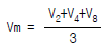
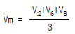
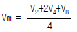
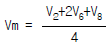
(정답률: 47%)
31. 직사각형 토지를 줄자로 측정한 결과가 가로 37.8m, 세로 28.9m였다. 이 줄자의 공차는 30m당 +4.7㎝였다면이 토지의 면적 최대 오차는?
- 0.03m2
- 0.36m2
- 3.42m2
- 3.53m2
(정답률: 12%)
32. 삼변측량을 실시하여 길이가 각각 a=1200m, b=1300m, c=1500m 로 측정되었을 때에 c변에 대한 협각 ∠C는?
- 73° 31′ 02″
- 73° 33′ 02″
- 73° 35′ 02″
- 73° 37′ 02″
(정답률: 15%)
33. 클로소이드의 매개변수 A=60m인 클로소이드(clothoid) 곡선 상의 시점으로부터 곡선길이(L)가 30m일 때 반지름(R)은?
- 60m
- 90m
- 120m
- 150m
(정답률: 5%)
34. 수평각 관측값에 포함되는 오차를 소거하기 위한 관측 방법에 대한 설명 중 우연오차(부정오차)를 소거하기 위한 방법은?
- 망원경을 정반으로 관측하여 평균한다.
- 수직축과 수평기포관축과의 직교를 조정한다.
- 편심거리와 편심각을 관측하여 편심보정한다.
- 아지랭이가 적은 아침과 저녁에 관측한다.
(정답률: 19%)
35. 다음 위성 중에서 가장 높은 해상력(Resolution)을 가진 영상감지기를 탑재한 위성은?
- IKONOS
- SPOT
- LANDSAT
- NOAA
(정답률: 9%)
36. 그림과 같이 교호수준측량을 하였다. B점의 높이는? (단, A점의 표고 HA=25.442m이다.)
- 24.165m
- 24.764m
- 25.255m
- 25.855m
(정답률: 42%)
37. 촬영고도 3,000m로부터 초점거리 15cm의 카메라로 촬영한 중복도 60%의 2장의 사진이 있다. 각각의 사진에서 주점 기선장을 측정한 결과 127mm와 129mm였다면 비고 60m인 굴뚝의 시차차는?
- 1.58mm
- 2.16mm
- 2.56mm
- 2.78mm
(정답률: 25%)
38. 중력이상에 대한 다음 설명 중 옳지 않은 것은?
- 중력이상이 양(+)이면 그 지점 부근에 무거운 물질이 있는 것으로 추정할 수 있다.
- 중력이상에 대한 취급은 물리학적 측지학에 속한다.
- 중력이상에 의해 지표면 밑의 상태를 추정할 수 있다.
- 중력식에 의한 계산값에서 실측값을 뺀 것이 중력이 상이다.
(정답률: 34%)
39. 축척 1/50000의 지형도에서 제한 경사가 10%일 때 각 주곡선 간의 도상 수평거리는?
- 2㎜
- 4㎜
- 6㎜
- 8㎜
(정답률: 28%)
40. 등고선의 성질에 대한 설명으로 옳지 않은 것은?
- 경사가 급할수록 등고선 간격이 좁다.
- 경사가 일정하면 등고선의 간격이 서로 같다.
- 등고선은 분수선과 직교하고, 합수선과는 직교하지 않는다.
- 등고선의 최단거리 방향은 최대경사방향을 나타낸다.
(정답률: 30%)
3과목: 수리학 및 수문학
41. 단위도의 지속시간을 변경시킬 때 사용되는 방법은?
- N - day법
- S - 곡선법
- ø - index법
- Stevens법
(정답률: 0%)
42. 밀폐된 직육면체의 탱크에 물이 5m 깊이로 차 있을 때 수면에는 3㎏/cm2의 증기압이 작용하고 있다면 탱크 밑면에 작용하는 압력은?
- 3.45㎏/cm2
- 3.75㎏/cm2
- 3.50㎏/cm2
- 3.80㎏/㎝2
(정답률: 19%)
43. 다음 그림과 같은 관로에서 물이 흐르는 경우 관경이 작은 관에서의 레이놀즈 수가 20,000 이라면 관경이 큰 관에서의 레이놀즈 수는?
- 5,000
- 10,000
- 20,000
- 40,000
(정답률: 16%)
44. 70mm의 강우량이 그림과 같은 분포로 내렸을 때 유역의 유출량이 30mm였다. 이 때의 ø -index는?
- 15mm/hr
- 10mm/hr
- 20mm/hr
- 12.5mm/hr
(정답률: 14%)
45. 강우강도를 I, 침투능을 f, 총 침투량을 F, 토양수분 미흡량을 D라 할 때, 지표유출은 발생하나 지하수위는 상승하지 않는 경우에 대한 조건식은?
- I < f, F < D
- I < f, F > D
- I > f, F < D
- I > f, F > D
(정답률: 30%)
46. 그림과 같은 수조에서 수심이 5m인 A점에 작은 오리피스 가 설치되어 있고 B에서 압축공기를 유입시켜 수면 위의 공기압력(P)을 2t/m2로 유지시킬 때 오리피스 A에서의 유속은? (단, 유속계수는 0.6으로 함.)
- 4.03m/sec
- 5.03m/sec
- 6.03m/sec
- 7.03m/sec
(정답률: 7%)
47. 다음 수문해석에 대한 설명중 옳지 않은 것은?
- Talbot형의 강우강도 식은
 (t:지속시간(분), a와 b는 계수)이다.
(t:지속시간(분), a와 b는 계수)이다. - Rating Curve는 수위와 유량과의 관계를 나타내는 곡선이다.
- 어느 관측소의 결측강우량은 어느 경우에나 부근 관측지점들의 강우량을 기준으로 산술평균에 의해서만 구해야 한다.
- 이중누가 우량분석으로 어느 관측소의 우량계의 위치와 관측방법 등의 변화가 있었음을 발견하여 관측우량을 교정해 줄 수 있다.
(정답률: 30%)
48. 그림과 같이 W의 각속도로 회전하고 ha까지 물이 올라 왔다가 정지 했을 때 높이는 h가 되었다. ha, h, ho의 관계식으로 옳은 것은?
(정답률: 17%)
49. 개수로내의 흐름에서 평균유속을 구하는 방법 중 2점법 (2点法)은 수면하 어느 위치에서의 유속측정값을 평균한 것인가?
- 수면과 전수심의 50% 위치
- 수면으로부터 수심의 10% 와 90% 위치
- 수면으로부터 수심의 20% 와 80% 위치
- 수면으로부터 수심의 40% 와 60% 위치
(정답률: 50%)
50. 비에너지와 한계수심에 관한 설명중 옳지 않은 것은?
- 비에너지는 수로의 바닥을 기준으로 한 단위무게의 유수가 가지는 에너지이다.
- 유량이 일정할 때 비에너지가 최소가 되는 수심이 한계수심이 된다.
- 비에너지가 일정할 때 한계수심으로 흐르면 유량이 최소로 된다.
- 직사각형 단면의 수로에서 한계수심은 비에너지의 그림참조m1 이다.
(정답률: 40%)
51. 그림과 같이 우물로부터 일정한 양수율로 양수를 하여 우물 속의 수위가 일정하게 유지되고 있다. 대수층은 균질하며 지하수의 흐름은 우물을 향한 방사상 정상류라 할 때 양수율(Q)를 구하는 식은? (단, k는 투수계수임)
(정답률: 25%)
52. 경계층에 관한 사항 중 틀린 것은?
- 전단저항은 경계층내에서 발생한다.
- 경계층 내에서는 층류가 존재할 수 없다.
- 이상유체일 경우는 경계층은 존재하지 않는다.
- 경계층에서는 레이놀즈(Reynolds)응력이 존재한다.
(정답률: 30%)
53. 흐르는 유체 속의 한 점(x,y,z)의 각 축방향의 속도성분을 (u,v,w)라 하고 밀도를 ρ , 시간을 t로 표시할 때 가장 일반적인 경우의 연속방정식은?
(정답률: 40%)
54. 구형물체(球形物體)에 대하여 stokes의 법칙이 적용되는 범위에서 항력계수 CD는?
- CD = Re-1
- CD = 4Re
- CD = 24/Re
- CD = 64/Re
(정답률: 32%)
55. 지하수의 흐름에서 Darcy 법칙을 사용할 때의 가정조건 중 틀린 것은?
- 다공층의 매질은 균일하며 동질이다.
- 흐름은 정상류이다.
- 유속은 입자 사이를 흐르는 평균이론유속이다.
- 흐름이 층류보다 난류인 경우에 더욱 정확하다.
(정답률: 47%)
56. 유출에 대한 설명으로 옳지 않은 것은?
- 직접유출(direct runoff)은 강수 후 비교적 짧은시간 내에 하천으로 흘러들어가는 부분을 말한다.
- 지표유출(surface runoff)은 짧은 시간 내에 하천으로 유출되는 지표류 및 하천 또는 호수면에 직접 떨어진 수로상 강수 등으로 구성된다.
- 기저유출(base flow)은 비가 온 후의 불어난 유출을 말한다.
- 하천에 도달하기 전에 지표면 위로 흐르는 유출을 지표류(overland flow)라 한다.
(정답률: 6%)
57. 관수로 속의 물이 큰 저수지로 유출할 때에 손실수두 계수는?
- 0.5
- 1.0
- 1.5
- 2.0
(정답률: 40%)
58. 관수로에서 동수경사선에 대한 설명으로 옳은 것은?
- 수평기준선에서 손실수두와 속도수두를 가산한 수두선이다.
- 관로중심선에서 압력수두와 속도수두를 가산한 수두선이다.
- 전수두에서 손실수두를 제외한 수두선이다.
- 에너지선에서 속도수두를 제외한 수두선이다.
(정답률: 50%)
59. 수심이 2m인 경우에 수리학적으로 가장 유리한 구형 단면이라고 하면 이 때의 동수반경은?
- 1m
- 1.2m
- 1.5m
- 2m
(정답률: 알수없음)
60. 토리첼리(Torricelli)정리는 다음 어느 것을 이용하여 유도할 수 있는가?
- 파스칼 원리
- 알키메데스 원리
- 레이놀즈 원리
- 베르누이 정리
(정답률: 18%)
4과목: 철근콘크리트 및 강구조
61. 강도 설계법에 의할 때 단철근 직4각형보가 균형단면이 되기 위한 중립축의 위치 C는? (단, fy = 300MPa, d = 600mm, 1MPa=10kgf/cm2)
- C = 400mm
- C = 293mm
- C = 494mm
- C = 390mm
(정답률: 13%)
62. 콘크리트의 강도설계에서 등가 직사각형 응력블록의 깊이 a=β1·C 로 표현할 수 있다. fck = 60MPa인 경우 β1의 값은 얼마인가? (단, 1MPa = 10kgf/cm2)
- 0.85
- 0.732
- 0.65
- 0.626
(정답률: 62%)
63. 주어진 단철근보 단면에서 균열검토를 위한 유효인장 단면적(A)은 얼마인가? (단, 사용철근은 D25-6EA이다.)
- 9000mm2
- 10000mm2
- 12000mm2
- 60000mm2
(정답률: 0%)
64. 아래 그림과 같은 두께 19mm 평판의 순단면적을 구하면? (단, 볼트는 직경 22mm를 사용한다.)
- 32.7cm2
- 38.0cm2
- 39.2cm2
- 45.3cm2
(정답률: 10%)
65. 포스트텐션 부재에 강선을 단면(200mm× 300mm)의 중심에 배치하여 1500MPa 으로 긴장하였다. 콘크리트의 크리프로 인한 강선의 프리스트레스 손실율은? (단, 강선의 단면적 Ap = 800mm2, n = 6, 크리프 계수는 2.0이며, 1MPa = 10kgf/cm2)
- 12 %
- 16 %
- 18 %
- 21 %
(정답률: 13%)
66. 프리스트레스 감소 원인중 프리스트레스 도입후 시간의 경과에 따라 생기는 것이 아닌 것은?
- PC강재의 릴랙세이션
- 콘크리트의 건조수축
- 콘크리트의 크리프
- 정착 장치의 활동
(정답률: 27%)
67. 그림과 같은 복철근 직사각형 단면에서 응력 사각형의 깊이 a의 값은 얼마인가? (단, fck = 24MPa, fy = 350MPa, As=5730mm2, As′=1980mm2, Es=2×105MPa,1MPa=10kgf/cm2)
- 227.2 mm
- 199.6 mm
- 217.4 mm
- 183.8 mm
(정답률: 39%)
68. 그림에 나타난 정사각형 띠철근 단주가 균형상태일 때 압축측 콘크리트가 부담하는 압축력은 749 kN이다. 설계축 하중강도 φPn 을 계산하면? (단, 철근 D25 1본의 단면적은 507mm2, fck=24MPa, fy=400MPa, E=2.0× 105MPa이며, 1MPa = 1N/mm2=10kgf/cm2)
- 471 kN
- 532 kN
- 608 kN
- 749 kN
(정답률: 0%)
69. 강판형(Plate girder) 복부(web) 두께의 제한이 규정되어 있는 가장 큰 이유는?
- 좌굴의 방지
- 공비의 절약
- 자중의 경감
- 시공상의 난이
(정답률: 34%)
70. 굽힘철근에 대한 다음 설명 중 잘못된 것은?
- 보의 정철근 또는 부철근을 둘러싸고 이에 직각되게 또는 경사지게 배치한 복부철근이다.
- 정철근 또는 부철근을 구부려 올리거나 또는 구부려 내린 복부철근이다.
- D38이상인 굽힘철근의 구부리는 내면반지름은 철근지름의 5배 이상으로 하여야 한다.
- 전단철근의 한 종류이다.
(정답률: 24%)
71. 콘크리트의 설계기준강도(fck)가 30MPa이며 철근의 설계항복강도가 400MPa이면 직경이 25 mm인 압축 이형철근의 기본정착길이(ldb)는 얼마인가?
- 227 mm
- 358 mm
- 457 mm
- 545 mm
(정답률: 10%)
72. 계수전단강도 Vu=60kN 을 받을 수 있는 직사각형 단면이 최소전단철근 없이 견딜 수 있는 콘크리트의 유효깊이 d는 최소 얼마 이상이어야 하는가? (단, fck=24MPa, b=350mm, 1MPa=10kgf/cm2, 1N=0.1kgf)
- 618mm
- 525mm
- 434mm
- 328mm
(정답률: 16%)
73. PSC 보를 RC 보처럼 생각하여, 콘크리트는 압축력을 받고 긴장재는 인장력을 받게하여 두 힘의 우력 모멘트로 외력에 의한 휨모멘트에 저항시킨다는 생각은 다음 중 어느 개념과 같은가?
- 응력개념(stress concept)
- 강도개념(strength concept)
- 하중평형개념(load balancing concept)
- 균등질 보의 개념(homogeneous beam concept)
(정답률: 47%)
74. 철근콘크리트 1방향 슬래브의 설계에 대한 설명 중 틀린 것은?
- 주철근에 직각되는 방향으로 온도철근을 배근해야 하며, 특히 항복강도가 400MPa이하인 이형철근인 경우 온도철근비는 0.0020이상이다.
- 슬래브의 정철근 및 부철근 중심간격은 최대 모멘트 단면에서 슬래브두께의 3배 이하 또한 400mm이하 이어야 한다.
- 처짐제한을 위한 최소 슬래브 두께는 100mm이다.
- 활하중이 고정하중의 3배를 초과하는 경우에는 설계시 근사해법을 사용할 수 없다.
(정답률: 22%)
75. 인장 철근의 겹침이음에 대한 설명 중 틀린 것은?
- 다발철근의 겹침이음은 다발 내의 개개 철근에 대한 겹침이음길이를 기본으로 결정되어야 한다.
- 겹침이음에는 A급, B급 이음이 있다.
- 겹침이음된 철근량이 총철근량의 1/2 이하인 경우는 B급이음이다.
- 어떤 경우이든 300mm 이상 겹침이음한다.
(정답률: 18%)
76. 1방향 슬래브의 전단력에 대한 위험단면은 다음 중 어느 곳인가? (단, d는 유효깊이)
- 지점
- 지점에서 d/2 인 곳
- 지점에서 d 인 곳
- 슬래브의 중간인 곳
(정답률: 9%)
77. 콘크리트 특성에 대한 설명중 잘못된 것은?
- 부정정 구조물인 경우에는 부재가 건조 수축을 일으키려는 거동이 구속되어 인장력이 생긴다.
- 압축력은 콘크리트의 모상균열을 통하여 전달 되지만 인장력은 그렇지 못하다.
- 부재표면에 인접된 콘크리트가 내부콘크리트보다 빨리 건조되어 압축을 받는다.
- 양생중 골재사이의 시멘트풀이 건조수축을 일으켜 내부에 모상균열을 형성한다.
(정답률: 20%)
78. 그림과 같이 단면의 중심에 PS강선이 배치된 부재에 자중을 포함한 하중 w = 30kN/m가 작용한다. 부재의 연단에 인장응력이 발생하지 않으려면 PS강선에 도입되어야 할 긴장력은 최소 얼마이상인가?(단, 1N=0.1kgf)
- 20⑤kN
- 2025kN
- 2045kN
- 2065kN
(정답률: 39%)
79. 그림과 같은 T형 단면의 등가 직사각형의 응력깊이 a를 구하면? (여기서, 과소 철근보이고, fck = 21MPa, fy =420MPa, As = 1926mm2, 1MPa=10kgf/cm2)
- a = 36.2mm
- a = 47.7mm
- a = 65.4mm
- a = 76.6mm
(정답률: 8%)
80. b = 300mm, d = 500mm, As = 3 - D35 = 2870mm2, fck = 21MPa, fy = 300MPa인 단철근 직사각형 보의 설계 휨강도 φMn은 얼마인가? (여기서, 이 보는 과소철근보이며, 1MPa = 1N/mm2 = 10kgf/cm2)
- 255 kN·m
- 287 kN·m
- 307 kN·m
- 337 kN·m
(정답률: 19%)
5과목: 토질 및 기초
81. 3m x 3m 크기의 정사각형 기초의 극한지지력을 Terzaghi 공식으로 구하면? (단,지하수위는 기초바닥 깊이와 같다. 흙의 마찰각 20° ,점착력 5t/m2 단위중량 1.7t/m3이고, 지하수위 아래의 흙의 포화단위 중량은 1.9t/m3이다. 지지력계수 Nc = 18, Nr = 5, Nq = 7.5이다.)
- 147.9t/m2
- 123.1t/m2
- 153.9t/m2
- 133.7t/m2
(정답률: 15%)
82. 다음 설명중 틀린 것은?
- 점토의 경우 입도 분포는 상대적으로 공학적 거동에 큰 영향을 미치지 않고 물의 유무가 거동에 매우 큰 영향을 준다.
- 액성지수는 자연상태에 있는 점토 지반의 상대적인 연경도를 나타내는데 사용되며 1에 가까운 지반일수록 과압밀 된 상태에 있다.
- 활성도가 크다는 것은 점토광물이 조금만 증가하더라 도 소성이 매우 크게 증가한다는 것을 의미하므로 지반의 팽창 잠재 능력이 크다.
- 흐트러지지 않은 자연상태의 지반인 경우 수축한계가 종종 소성한계보다 큰 지반이 존재하며 이는 특히 민감한 흙의 경우 나타나는 현상으로 주로 흙의 구조 때문이다.
(정답률: 14%)
83. 흙의 다짐에 관한 설명 중 옳지 않은 것은?
- 다짐에너지가 커지면 γdmax 는 커지고, Wopt 는 작아진다.
- 양입도일수록 γdmax 는 커지고, 빈입도 일수록 γdmax 는 작아진다.
- 조립토일수록 γdmax 가 크며 Wopt 도 크다.
- 점성토는 다짐곡선이 완만하고 조립토는 급경사를 이룬다.
(정답률: 40%)
84. 입경이 가늘고 비교적 균일하며 느슨하게 쌓여있는 모래 지반이 물로 포화되어 있을때 지진이나 충격을 받으면 일시적으로 전단강도를 잃어버리는 현상은?
- 모관현상(Capillarity)
- 분사현상(Quicksand)
- 틱소트로피(Thixotropy)
- 액화현상(Liquefaction)
(정답률: 34%)
85. 어떤 점토지반의 표준관입 실험 결과 N=2∼4이었다. 이 점토의 consistency는?
- 대단히 견고
- 연약
- 견고
- 대단히 연약
(정답률: 37%)
86. 흙속에 있는 한 점의 최대 및 최소 주응력이 각각 2.0kg/cm2 및 1.0 kg/cm2일 때 최대 주응력면과 30°를 이루는 평면상의 전단응력을 구한 값은?
- 0.1⑤ kg/cm2
- 0.215 kg/cm2
- 0.323 kg/cm2
- 0.433 kg/cm2
(정답률: 29%)
87. 말뚝 지지력에 관한 여러가지 공식 중 정역학적 지지력 공식이 아닌 것은?
- Dorr의 공식
- Terzaghi의 공식
- Meyerhof의 공식
- Engineering -News 공식
(정답률: 47%)
88. 자연상태 실트질 점토의 액성한계가 65%, 소성한계 30%, 0.002㎜보다 가는 입자의 함유율이 29% 이다. 이 흙의 활성도 (Activity)는?
- 0.8
- 1.0
- 1.2
- 1.4
(정답률: 15%)
89. 토립자가 둥글고 입도분포가 나쁜 모래 지반에서 표준 관입시험을 한 결과 N치 = 10이었다. 이 모래의 내부 마찰 각을 Dunham의 공식으로 구하면 다음중 어느 것인가?
- 21°
- 26°
- 31°
- 36°
(정답률: 27%)
90. 말뚝기초를 시공하는데 있어서 유의해야 할 사항 중 옳지 않은 것은 ?
- 말뚝을 좁은 간격으로 시공했을 때는 단항 (Single pile)인가 군항(Group pile)인가를 따져야 한다.
- 군항일 경우는 말뚝 1본당 지지력을 말뚝수로 곱한 값이 지지력이다.
- 말뚝이 점토지반을 관통하고 있을 때는 부마찰력(negative Friction)에 대해서 검토를 할 필요가 있다.
- 말뚝간격이 너무 좁으면 단항에 비해서 휠씬 깊은 곳까지 응력이 미치므로 그 영향을 검토해야 한다.
(정답률: 0%)
91. 어떤 점토의 압밀시험에서 압밀계수가 Cv=3.2×10-3cm2/sec라면 두께 2㎝인 공시체의 압밀도가 90%에 도달하는데 걸리는 시간은? (단, 배수조건은 양면배수이다.)
- 6.40분
- 4.42분
- 2.88분
- 5.76분
(정답률: 18%)
92. 부마찰력에 대한 설명이다. 틀린 것은?
- 부마찰력을 줄이기 위하여 말뚝표면을 아스팔트등으로 코팅하여 타설한다.
- 지하수의 저하 또는 압밀이 진행중인 연약지반에서 부마찰력이 발생한다.
- 점성토 위에 사질토를 성토한 지반에 말뚝을 타설한 경우에 부마찰력이 발생한다.
- 부마찰력은 말뚝을 아래 방향으로 작용하는 힘이므로 결국에는 말뚝의 지지력을 증가시킨다.
(정답률: 22%)
93. 함수비 15%인 흙 2,300g이 있다. 이 흙의 함수비를 25%로 증가시키려면 얼마의 물을 가해야 하는가?
- 200g
- 230g
- 345g
- 575g
(정답률: 12%)
94. 포화된 점토시료에 대해 비압밀 비배수 삼축압축시험을 실시하여 얻어진 비배수 전단강도는 180㎏/cm2이었다. (이 시험에서 가한 구속응력은 240㎏/cm2이었다.) 만약 동일한 점토시료에 대해 또 한번의 비압밀 비배수 삼축 압축 시험을 실시할 경우(단, 이번 시험에서 가해질 구속 응력의 크기는 400㎏/cm2), 전단파괴시에 예상되는 축차 응력의 크기는?
- 90㎏/cm2
- 180㎏/cm2
- 360㎏cm2
- 540㎏cm2
(정답률: 13%)
95. 지표에서 2m x 2m 되는 기초에 10t 의 하중이 작용한다. 깊이 5m 되는 곳에서 이 하중에 의해 일어나는 연직응력을 2 : 1 분포법으로 계산한 값은?
- 2.857 t/m2
- 0.816 t/m2
- 0.083 t/m2
- 1.975 t/m2
(정답률: 43%)
96. 페이퍼 드레인공법의 설명중 틀린 것은?
- 압밀촉진공법으로 시공속도가 빠르다.
- 장기간 사용시 열화현상이 생겨 배수효과가 감소한다
- Sand drain 공법에 비해 초기 배수효과는 떨어진다.
- 단면이 깊이에 대해 일정하다.
(정답률: 30%)
97. 간극율 n = 0.4, 비중 Gs = 2.65인 어느 사질토층의 한계 동수경사 icr은 얼마인가?
- 0.99
- 1.06
- 1.34
- 1.62
(정답률: 9%)
98. 지표면으로 부터 아래쪽으로 4m 되는 지점에 지하수면이 위치하고 있다. 만약에 지하수면의 위치에 변동이 생겨 지표면으로 부터 아래쪽으로 6m 되는 지점에 위치하게 되었다면, 이와 같은 지하수면의 변동에 따른 주동토압합력의 변화량은 얼마인지 수압을 포함하여 계산하면?
- 7.33 t/m
- 10.14 t/m
- 14.34 t/m
- 20.24 t/m
(정답률: 7%)
99. 내부 마찰각 30° , 점착력 1.5t/m2 그리고 단위중량이 1.7t/m3인 흙에 있어서 인장균열(tension crack)이 일어나는 깊이는?
- 2.2m
- 2.7m
- 3.1m
- 3.5m
(정답률: 17%)
100. 그림과 같은 모래층에 널말뚝을 설치하여 물막이공 내의 물을 배수하였을때, 분사현상이 일어나지 않게 하려면 얼마의 압력을 가하여야 하는가? (단, 모래의 비중은 2.65, 간극비는 0.65, 안전율은 3으로 한다.)
- 6.5t/m2
- 13t/m2
- 33t/m2
- 16.5t/m2
(정답률: 7%)
6과목: 상하수도공학
101. 다음중 부영양화된 호수나 저수지에서 나타나는 현상은?
- 각종 조류의 광합성 증가로 인하여 호수 심층의 용존산소가 증가한다.
- 조류사멸에 의해 물이 맑아진다.
- 바닥에 인, 질소 등 영양염류의 증가로 송어, 연어등 어종이 증가한다.
- 냄새, 맛을 유발하는 물질이 증가한다.
(정답률: 36%)
102. 활성슬러지 공법에서 벌킹(bulking)현상의 원인이 아닌 것은?
- 유량, 수질의 과부하
- pH의 저하
- 낮은 용존산소
- 반송유량의 과다
(정답률: 17%)
103. pH가 5.6에서 4.3으로 변화할 때 수소이온 농도는 약 몇 배가 되는가?
- 13
- 15
- 17
- 20
(정답률: 14%)
104. 0.2m3/sec의 물을 30m 높이에 양수하기 위한 펌프의 소요 동력(HP)은? (단, 펌프의 효율은 70% )
- 29HP
- 58HP
- 113HP
- 157HP
(정답률: 20%)
1⑤. BOD5가 155mg/L인 폐수가 있다. 탈산소계수(K1)가 0.2/day일 때 4일 후에 남아있는 BOD는? (단, 상용대수 기준)(오류 신고가 접수된 문제입니다. 반드시 정답과 해설을 확인하시기 바랍니다.)
- 27.3mg/L
- 56.4mg/L
- 127.5mg/L
- 172.2mg/L
(정답률: 0%)
106. 사용한 수도물을 생활용수, 공업용수 등으로 재활용할 수 있도록 다시 처리하는 시설은?
- 광역상수도
- 중수도
- 전용수도
- 공업용수도
(정답률: 0%)
107. 펌프의 공동현상(Cavitation)에 관한 내용과 가장 거리가 먼 것은?
- 흡입양정이 클수록 발생하기 쉽다.
- 펌프의 급정지시 발생하기 쉽다.
- 회전날개의 파손 또는 소음, 진동의 원인이 된다.
- 회전날개입구의 압력이 포화증기압 이하일 때 발생한다.
(정답률: 24%)
108. 호수나 저수지의 성층현상과 가장 관계가 깊은 요소는?(오류 신고가 접수된 문제입니다. 반드시 정답과 해설을 확인하시기 바랍니다.)
- 적조현상
- 미생물
- 질소(N), 인(P)
- 수온
(정답률: 0%)
109. 어떤 도시에 대한 다음의 인구통계표에서 2004년 현재로 부터 5년후의 인구를 추정하려 할 때 년평균 인구증가율(r)은? (단, 등비급수법에 의한 인구 추정임)
- 0.28545
- 0.18571
- 0.02857
- 0.00279
(정답률: 40%)
110. 급수방식에 대한 다음 설명중 맞지 않는 것은?
- 급수방식은 직결식과 저수조식으로 나누며 이를 병행 하기도 한다.
- 배수관의 관경과 수압이 충분할 경우는 직결식을 사용 한다.
- 수압은 충분하나 수량이 부족할 경우는 직결식을 사용하는 것이 좋다.
- 배수관의 수압이 부족할 경우 저수조식을 사용하는 것이 좋다.
(정답률: 8%)
111. 슬러지의 중량(건조 무게)이 3000kg이고, 비중이 1.⑤,수분함량이 96%인 슬러지의 용적은?
- 71m3
- 85m3
- 101m3
- 115m3
(정답률: 알수없음)
112. 펌프로 유속 1.81m/sec 정도로 양수량 0.85 m3/min을 양수할 때 토출관의 지름은?
- 100㎜
- 180㎜
- 360㎜
- 480㎜
(정답률: 34%)
113. 활성슬러지법에 의한 하수처리시 폭기조의 MLSS를 2400mg/L로 유지할 때 SVI가 120이면 반송률(R)은? (단, 유입수의 SS는 고려하지 않음)
- 24%
- 32%
- 40%
- 46%
(정답률: 42%)
114. 하수 중의 질소제거 방법으로 적합하지 않은 것은?
- 생물학적 질화-탈질법
- 응집침전법
- 이온교환법
- break point(파괴점) 염소주입법
(정답률: 0%)
115. 생물학적 처리방법으로 하수를 처리하고자 한다. 이를 위한 운영조건으로 틀린 것은?
- 영양물질인 BOD:N:P의 농도비가 100:5:1이 되도록 조절한다.
- 폭기조 내 용존산소는 통상 2mg/L로 유지한다.
- pH의 최적조건은 6.8∼7.2로써 이 때 미생물이 활발하다.
- 수온은 낮게 유지할수록 경제적이다.
(정답률: 50%)
116. 하천의 재포기(reaeration)계수가 0.2/day, 탈산소계수가 0.1/day이면 이 하천의 자정계수는?
- 0.1
- 0.2
- 0.5
- 2
(정답률: 29%)
117. 인구 10만의 도시에 계획 1인 1일 최대급수량 600L, 급수보급율 80%를 기준으로 상수도 시설을 계획하고자 한다. 이 도시의 계획 1일 최대급수량은?
- 32,000m3
- 40,000m3
- 48,000m3
- 60,000m3
(정답률: 47%)
118. 만류로 흐르는 수도관에서 조도계수 n = 0.01, 동수경사 I= 0.001, 관경 D = 5.08m 일 때 유량은? (단, M anning 공식을 적용할 것)
- 25m3/sec
- 50m3/sec
- 75m3/sec
- 100m3/sec
(정답률: 34%)
119. 다음 지형도의 상수계통도에 관한 사항 중 옳은 것은?
- 도수는 펌프가압식으로 해야 한다.
- 수질을 생각하여 도수로는 개수로를 택하여야 한다.
- 정수장에서 배수지는 펌프가압식으로 송수한다.
- 도수와 송수를 자연유하식으로 하여 동력비를 절감 한다.
(정답률: 24%)
120. 최고 효율점의 양수량 800m3/hr, 전양정 7m, 회전속도 1500rpm인 취수 펌프의 비속도(Specific Speed)는?
- 1173
- 1273
- 1373
- 1473
(정답률: 46%)
AB와 로우프 AC는 같은 길이와 같은 각도로 연결되어 있으므로, 하중이 반으로 분산됩니다. 따라서 AB와 AC는 각각 1000kg의 하중을 받게 됩니다. 이때, AB와 AC는 수직 방향으로 작용하는 힘이므로, 이들이 받는 힘은 각각 1000kgf입니다. 따라서 정답은 "나"입니다.